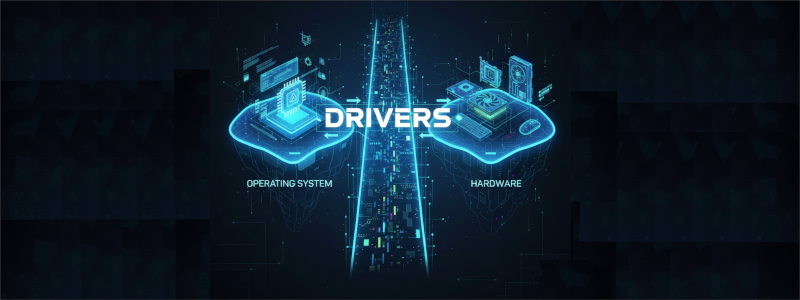
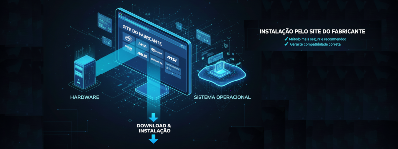
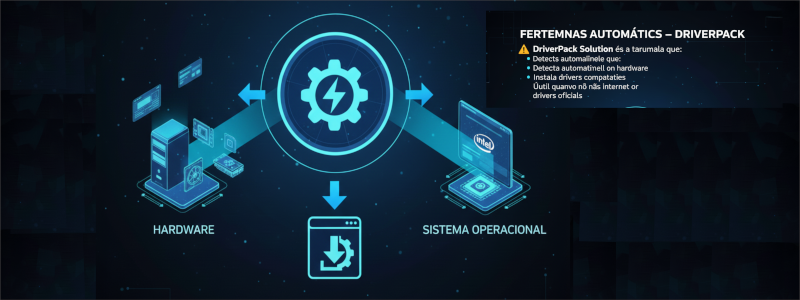
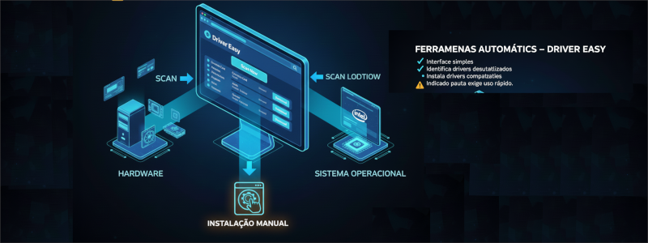
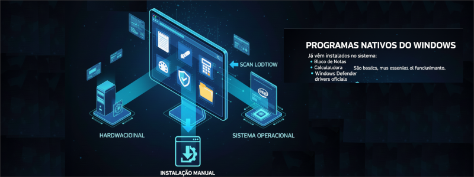
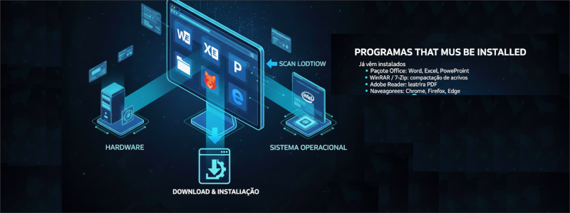
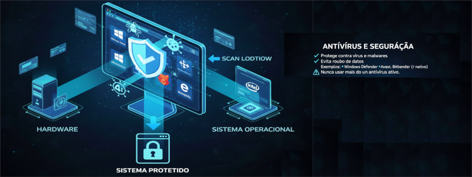
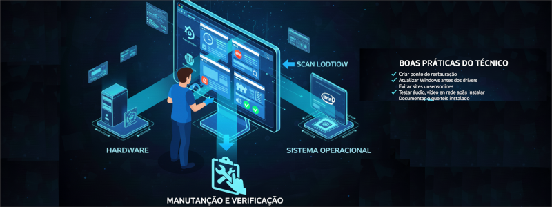

Drivers
Drivers são programas responsáveis pela comunicação
entre o sistema operacional e o hardware.
Sem drivers corretos, o hardware pode funcionar mal ou não funcionar.

Instalação pelo Site do Fabricante
✔ Método mais seguro e recomendado
✔ Garante compatibilidade correta
Exemplos:
• Intel, AMD (chipset e vídeo)
• NVIDIA (placa de vídeo)
• ASUS, Gigabyte, MSI (placa-mãe)
⚠ Sempre escolher o sistema operacional correto.

Ferramentas Automáticas – DriverPack
DriverPack Solution é uma ferramenta que:
• Detecta automaticamente o hardware
• Instala drivers compatíveis
• Útil quando não há internet ou drivers oficiais
⚠ Atenção a programas extras durante a instalação.

Ferramentas Automáticas – Driver Easy
✔ Interface simples
✔ Identifica drivers desatualizados
✔ Indicado para uso rápido
⚠ Versão gratuita exige instalação manual.

Programas Nativos do Windows
Já vêm instalados no sistema:
• Bloco de Notas
• Paint
• Calculadora
• Windows Defender
• Explorador de Arquivos
São básicos, mas essenciais para o funcionamento.

Programas que Devem ser Instalados
🔹 Pacote Office: Word, Excel, PowerPoint
🔹 WinRAR / 7-Zip: compactação de arquivos
🔹 Adobe Reader: leitura de PDF
🔹 Navegadores: Chrome, Firefox, Edge

Antivírus e Segurança
✔ Protege contra vírus e malwares
✔ Evita roubo de dados
Exemplos:
• Windows Defender (nativo)
• Avast, Bitdefender, Kaspersky
⚠ Nunca usar mais de um antivírus ativo.

Boas Práticas do Técnico
✔ Criar ponto de restauração
✔ Atualizar Windows antes dos drivers
✔ Evitar sites desconhecidos
✔ Testar áudio, vídeo e rede após instalar
✔ Documentar o que foi instalado